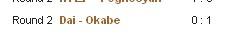

第12届世界连珠锦标赛QT第二轮
#11 Re:第12届世界连珠锦标赛QT第二轮作者：高飞 发表时间：2011-8-1 22:37:01
貌似小戴走错了~~13手胆量好大~~#12 Re:第12届世界连珠锦标赛QT第二轮作者：珍惜你和我 发表时间：2011-8-1 22:37:39
黑石显示黑挂了，不知道还有没有救，小天是黑吗？#13 Re:第12届世界连珠锦标赛QT第二轮作者：无尽 发表时间：2011-8-1 22:44:18
或许对手交换了，只是录谱没完整#14 Re:第12届世界连珠锦标赛QT第二轮作者：猪小姐 发表时间：2011-8-1 22:46:29
鼓掌~~~~~~~~~~~~总算看到更新的了~~~~~~~~~~~~~~~~#15 Re:第12届世界连珠锦标赛QT第二轮作者：励精 发表时间：2011-8-1 22:55:12
第二轮，河村负于安茨。#16 Re:第12届世界连珠锦标赛QT第二轮作者：第五象限 发表时间：2011-8-1 22:56:10
第一轮什么情况？这就是World Championship的直播水准么。。#17 Re:第12届世界连珠锦标赛QT第二轮作者：茗弈妙手 发表时间：2011-8-1 22:57:59
13手是唯一的。。。
 残月4-G8,5-J8,6-I10,12-I6.rar
残月4-G8,5-J8,6-I10,12-I6.rar［此帖子已被 茗弈妙手 在 2011-8-1 23:00:59 编辑过］
#18 Re:第12届世界连珠锦标赛QT第二轮作者：珍惜你和我 发表时间：2011-8-1 23:00:08
renju网站上显示，这个谱是正确的，黑石显示小天挂了#19 Re:第12届世界连珠锦标赛QT第二轮作者：松痕 发表时间：2011-8-1 23:08:38
到现在还没更新
#20 Re:第12届世界连珠锦标赛QT第二轮作者：白河愁 发表时间：2011-8-1 23:09:13
完了……14是正确的，15应对的非常快［此帖子已被 白河愁 在 2011-8-1 23:09:51 编辑过］
#21 Re:第12届世界连珠锦标赛QT第二轮作者：白河愁 发表时间：2011-8-1 23:11:23
不过后面的杀法也未见得就很容易，还有机会#22 Re:第12届世界连珠锦标赛QT第二轮作者：珍惜你和我 发表时间：2011-8-1 23:15:57
最新更新
=======上图对应的爱五子棋谱代码如下，以便你拆解：========
h8h9j8g8j9i10j11j10k10i8g10i6i9h7j5
======================================================
#23 Re:第12届世界连珠锦标赛QT第二轮作者：珍惜你和我 发表时间：2011-8-1 23:16:54
小天居然出现速败的局面？怎么回事呢?#24 Re:第12届世界连珠锦标赛QT第二轮作者：小丸.net 发表时间：2011-8-1 23:18:23
貌似被骗了。。。。
#25 Re:第12届世界连珠锦标赛QT第二轮作者：珍惜你和我 发表时间：2011-8-1 23:21:26
对手长考，估计可以杀的出来，对手可是冈部宽，估计不会漏杀，我的天
#26 Re:第12届世界连珠锦标赛QT第二轮作者：珍惜你和我 发表时间：2011-8-1 23:26:16
=======上图对应的爱五子棋谱代码如下，以便你拆解：========
h8h9j8g8j9i10j11j10k10i8g10i6i9h7j5f7e6f6f8
======================================================
小天持黑，冈部宽持白 最新情况
［ 猪小姐 于 2011-8-1 23:30:59 时花20金币送鲜花一朵］
#27 Re:第12届世界连珠锦标赛QT第二轮作者：第五象限 发表时间：2011-8-1 23:28:58
| Round 2 | H�bem�gi - Poghosyan | 1 : 0 |
| Round 2 | Kawamura - Soos�rv | 0 : 1 |
| Round 2 | Zowadova - Karasyov | 0 : 1 |
| Round 2 | Andersson - Chen | 0 : 1 |
#28 Re:第12届世界连珠锦标赛QT第二轮作者：岑小鱼 发表时间：2011-8-1 23:31:45
这个不是骗..别人正常的应对....
qq游戏里就见过好多次..
论坛里就有个文章写到这个变化...（似乎是屏蔽写的?)
N年前yoda老师也介绍过这个变化---当时死活没想过白6要活三....
#29 Re:第12届世界连珠锦标赛QT第二轮作者：猪小姐 发表时间：2011-8-1 23:32:32
 珍惜加油更新~~~~~~~~~~~~~~~~~~~~~~~
珍惜加油更新~~~~~~~~~~~~~~~~~~~~~~~
我这控件下载不了。把安全级别调低防火墙全关了还是下载不了。哪位大师指点一下
#30 Re:第12届世界连珠锦标赛QT第二轮作者：周光乐 发表时间：2011-8-1 23:34:12
我也是下载不了，什么情况啊#31 Re:第12届世界连珠锦标赛QT第二轮作者：珍惜你和我 发表时间：2011-8-1 23:35:15
没油加了，如果对手必胜点下了，小天就出线希望渺茫了#32 Re:第12届世界连珠锦标赛QT第二轮作者：第五象限 发表时间：2011-8-1 23:35:28
12手难道在小天的意料之外？#33 Re:第12届世界连珠锦标赛QT第二轮作者：第五象限 发表时间：2011-8-1 23:36:52
才两轮 输一盘后面也还有很多机会呢#34 Re:第12届世界连珠锦标赛QT第二轮作者：潇洒 发表时间：2011-8-1 23:37:26
下载Java虚拟机安装后就可以看动态棋谱了［ 猪小姐 于 2011-8-2 0:13:05 时花20金币送鲜花一朵］
#35 Re:第12届世界连珠锦标赛QT第二轮作者：梧桐风 发表时间：2011-8-1 23:39:07
正在下载......改用火狐了，360不行。。。#36 Re:第12届世界连珠锦标赛QT第二轮作者：小丸.net 发表时间：2011-8-1 23:40:41
 小天输了。继续努力。。。#37 Re:第12届世界连珠锦标赛QT第二轮作者：第五象限 发表时间：2011-8-1 23:40:56
我用的360没问题啊#38 Re:第12届世界连珠锦标赛QT第二轮作者：第五象限 发表时间：2011-8-1 23:42:44
额 第一轮想必是赢了吧 还有机会
睡觉
#39 Re:Re:第12届世界连珠锦标赛QT第二轮作者：猪小姐 发表时间：2011-8-1 23:44:00
引用：
原文由 梧桐风 发表于 2011-8-1 23:39:07 :
正在下载......改用火狐了，360不行。。。
- -|||真麻烦。我换了遨游换了IE换了搜狗。都不行。。。。。。
#40 Re:第12届世界连珠锦标赛QT第二轮作者：珍惜你和我 发表时间：2011-8-1 23:45:23
小天挂了，靠=======上图对应的爱五子棋谱代码如下，以便你拆解：========
h8h9j8g8j9i10j11j10k10i8g10i6i9h7j5f7e6f6f8i7g7j7
======================================================到此，小天投子
#41 Re:第12届世界连珠锦标赛QT第二轮作者：以和为贵 发表时间：2011-8-1 23:48:04
仍需努力，加油！#42 Re:第12届世界连珠锦标赛QT第二轮作者：死劲哭 发表时间：2011-8-1 23:49:29
#43 Re:第12届世界连珠锦标赛QT第二轮作者：灯塔连珠 发表时间：2011-8-1 23:50:06
用搜狐的浏览器，再下载一个虚拟机，就能显示动态JAVA棋谱了。［ 猪小姐 于 2011-8-2 0:13:26 时花20金币送鲜花一朵］
#44 Re:第12届世界连珠锦标赛QT第二轮作者：灯塔连珠 发表时间：2011-8-1 23:51:12
戴小涵第一盘赢了输了，谁知道呀！？有消息吗？
#45 Re:Re:第12届世界连珠锦标赛QT第二轮作者：猪小姐 发表时间：2011-8-1 23:53:12
引用：
原文由 灯塔连珠 发表于 2011-8-1 23:51:12 :戴小涵第一盘赢了输了，谁知道呀！？有消息吗？
第一轮赢了。
#46 Re:第12届世界连珠锦标赛QT第二轮作者：aabb 发表时间：2011-8-1 23:53:28
小天那盘，到11手都是非常常见的变化。12以前常走10下面，实战的12也有不少棋手这么走。不知道是小天不熟悉这路变化还是想考验对手。。
#47 Re:第12届世界连珠锦标赛QT第二轮作者：杨文浩 发表时间：2011-8-2 0:03:48
好吧，我承认我是来寻求自我安慰的。
爱五子棋网上的直播都有把黑白双方搞错的时候，说不定RENJU.net也一样呢？
看看爱五子棋网上的那些日本人的对局谱吧，这种13完全更像是日本人走出来的嘛。
小天老师一直教我下棋，以我对他的认识，这个13真不像他走的。
小天老师，你快告诉我啊，走这个13的人不是你！！！
好了，我安慰完了，继续关注世锦赛。
［ 嵯峨 于 2011-8-2 0:06:32 时花20金币送鲜花一朵］
［ 猪小姐 于 2011-8-2 0:06:37 时花20金币送鲜花一朵］
#48 Re:第12届世界连珠锦标赛QT第二轮作者：嵯峨 发表时间：2011-8-2 0:07:05
 送朵花安慰你一下
送朵花安慰你一下#49 Re:第12届世界连珠锦标赛QT第二轮作者：小丸.net 发表时间：2011-8-2 0:07:08
又不是我直播。。。。你安慰个啥。。。。#50 Re:第12届世界连珠锦标赛QT第二轮作者：罔两 发表时间：2011-8-2 0:10:33
下载不了控件的，说下载没有安全认证的。去下个 JDK（也就是java虚拟机） 随便什么版本 搜JDK 6.0 就可以。
下完下一步下一步安装上就哦啦！！
［ 猪小姐 于 2011-8-2 0:13:40 时花20金币送鲜花一朵］
#51 Re:第12届世界连珠锦标赛QT第二轮作者：猪小姐 发表时间：2011-8-2 0:12:16
 谢谢教俺下载的各位~~~~~~~~~一人一朵大红花~~~~~~~~~~~~
谢谢教俺下载的各位~~~~~~~~~一人一朵大红花~~~~~~~~~~~~#52 Re:第12届世界连珠锦标赛QT第二轮作者：励精 发表时间：2011-8-2 1:01:28
http://javadl.sun.com/webapps/download/AutoDL?BundleId=49038
java虚拟机最新版。
［ 小红眼镜 于 2011-8-2 1:15:41 时花20金币送鲜花一朵］
［ 猪小姐 于 2011-8-2 2:33:45 时花20金币送鲜花一朵］
#53 Re:第12届世界连珠锦标赛QT第二轮作者：猪小姐 发表时间：2011-8-2 2:31:32
据不完全统计。截至第二轮全胜的有：
黄濑胜巳、Martin、Ants Soosorv、冈部宽、Karasyov Maxim。
陈科翰1.5分。
一胜的有：戴晓涵、Sumarokov、河村典彦、Poghosyan、Nikonov Konstantin、Blomstedt、神谷俊介、侯宜呈、林皇羽、Ale?Rybkal
这是根据直播统计的，直播的不全，希望来个明白人发个准确的数据。
 睡觉去。。。。。。
睡觉去。。。。。。
#54 Re:第12届世界连珠锦标赛QT第二轮作者：欧艾沃 发表时间：2011-8-2 6:43:24
小天和Okabe的棋。。。先，小天迟到了50分钟！第二，这个第12是黑胜可是小天下的第13是白胜。。。现在全棋看起来。。。真的没有意思，好弱的QT。小天加油吧，明天很难，有三盘棋，已经早上8点开始。我觉得对进去到AT要5分。所以如果再一次输。。。你们不能明白，瑞典的和中国的时间差6个小时，小天昨天已经9点去了睡觉，很早起床了，我觉得不太好。还有，第一次参加国际的比赛，对手们的水平不太高可是不是那么容易好成绩。。。［ 极地剑客 于 2011-8-2 11:55:12 时花20金币送鲜花一朵］
#55 Re:第12届世界连珠锦标赛QT第二轮作者：梧桐风 发表时间：2011-8-2 6:47:56
欧艾沃有积分情况和第三轮对阵表不？#56 Re:第12届世界连珠锦标赛QT第二轮作者：隐藏菜系 发表时间：2011-8-2 8:02:06
才输一局，还没完全进入状态，很正常呀。后面正常发挥，保留实力能晋级就行。#57 Re:第12届世界连珠锦标赛QT第二轮作者：灯塔连珠 发表时间：2011-8-2 8:33:55
小天迟到50分钟！！！！！！！！！！！！！！！！！！！ ，我真的无语了，听说他在国内比赛也是经常迟到，或者趴在桌子上睡着了，看来时差和状态还没调整过来呢，今天至少有要拿到2.5分才行呀！！！小天要奋起直追了！
，我真的无语了，听说他在国内比赛也是经常迟到，或者趴在桌子上睡着了，看来时差和状态还没调整过来呢，今天至少有要拿到2.5分才行呀！！！小天要奋起直追了！#58 Re:第12届世界连珠锦标赛QT第二轮作者：死劲哭 发表时间：2011-8-2 10:01:24
那么简单的12，相信小天老师不会不懂。有时候输也是一种策略。大家拭目以待吧#59 Re:第12届世界连珠锦标赛QT第二轮作者：踵酃 发表时间：2011-8-2 10:23:47
 悲观主义者表示不乐观,其实都好正常,心态很重要地
悲观主义者表示不乐观,其实都好正常,心态很重要地#60 Re:第12届世界连珠锦标赛QT第二轮作者：猪小弟 发表时间：2011-8-2 11:21:16
迟到50分钟，是在把世锦赛当儿戏么？棋上的问题也就算了，关键是态度问题。强烈那些出钱资助他比赛的人，现在有没有一种被愚弄的感觉。［ 棋道无尽 于 2011-8-2 13:07:09 时花50金币砸了你一个臭鸡蛋］
#61 Re:第12届世界连珠锦标赛QT第二轮作者：灯塔连珠 发表时间：2011-8-2 11:24:44
相信小天今天应该能发挥出本来的水平了
#62 Re:第12届世界连珠锦标赛QT第二轮作者：天真無邪 发表时间：2011-8-2 11:45:40
刚开始不适应佷正常...
#63 Re:Re:第12届世界连珠锦标赛QT第二轮作者：极地剑客 发表时间：2011-8-2 11:56:51
引用：个人认为平时习惯下RIF的,不一定能适应山口规则.
原文由 欧艾沃 发表于 2011-8-2 6:43:24 :
小天和Okabe的棋。。。先，小天迟到了50分钟！第二，这个第12是黑胜可是小天下的第13是白胜。。。现在全棋看起来。。。真的没有意思，好弱的QT。小天加油吧，明天很难，有三盘棋，已经早上8点开始。我觉得对进去到AT要5分。所以如果再一次输。。。你们不能明白，瑞典的和中国的时间差6个小时，小天昨天已经9点去了睡觉，很早起床了，我觉得不太好。还有，第一次参加国际的比赛，对手们的水平不太高可是不是那么容易好成绩。。。［ 极地剑客 于 2011-8-2 11:55:12 时花20金币送鲜花一朵］
#64 Re:第12届世界连珠锦标赛QT第二轮作者：卯寻月 发表时间：2011-8-2 12:11:14
估计是时差问题，中午觉得累休息一下，又没有人叫他，就睡过头了~